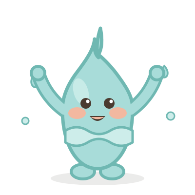
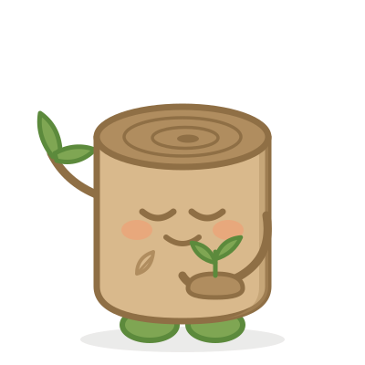
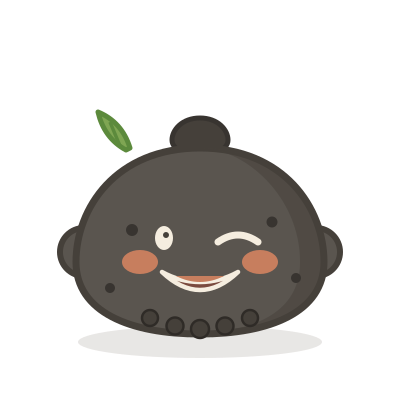

탐탐이와 친구들


사라져가는 제주어를
지키는 탐탐이와 세 수호신
지키는 탐탐이와 세 수호신
탐탐이 · 돌하르방 · 지키고 아는 자

물의 수호신
나르는 자

나무의 수호신
기르는 자

돌의 수호신
듣는 자
무뚝뚝한데 다정한, 제주식 위로
제주어 감수: 제주어연구소 감수 예정 · 수익의 5%는 제주어 보존 활동에 쓰입니다 · ⓒ탐탐이와 친구들
@tamnaground